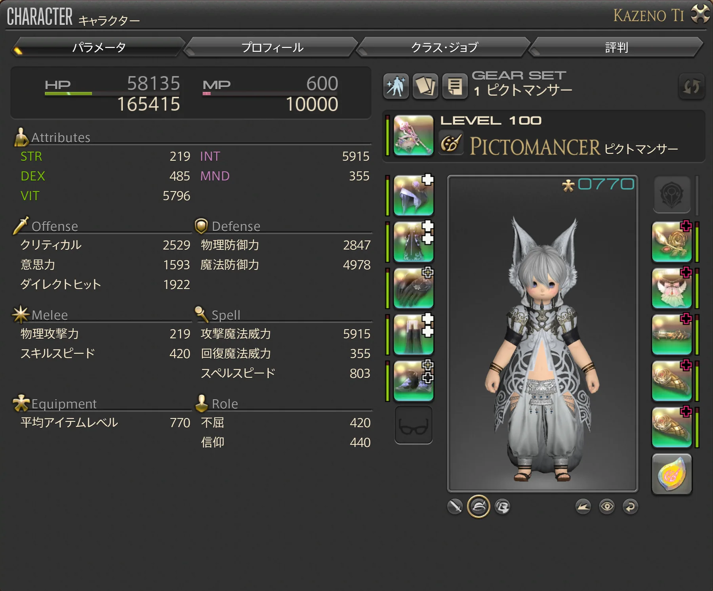

キャラクターレベルとアイテムレベル
キャラクターレベルとアイテムレベルは別のものです。キャラクターレベルはジョブそのもののレベル。アイテムレベルは装備の強さを表す数値です。
レベルが上がっていても装備が古いままだと、思ったほど強くならないことがあります。

「さいきょう」を使う
キャラクター画面の「さいきょう」を使うと、現在所持している装備から自動的に候補を選んでくれます。序盤の装備更新では特に便利です。
マテリア
装備には、条件を満たすことでマテリアを装着できます。序盤から無理に気にする必要はありません。より装備を強化したくなったときに覚えていけば大丈夫です。
修理
装備の耐久度が減った場合は、修理することで元に戻せます。NPCに依頼する方法と、自分で修理する方法があります。
錬精度
装備を使用していると錬精度が上昇していきます。100％になると、その装備からマテリアを精製できるようになります。
ジョブクエスト
ジョブによっては、ジョブクエストを進めることで新しいアクションなどが使えるようになる場合があります。メインクエストだけでなく、現在使用しているジョブのクエストも時々確認しておきましょう。